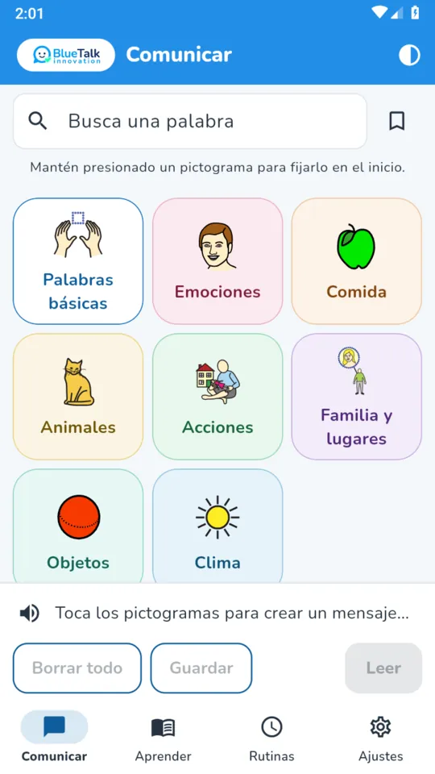
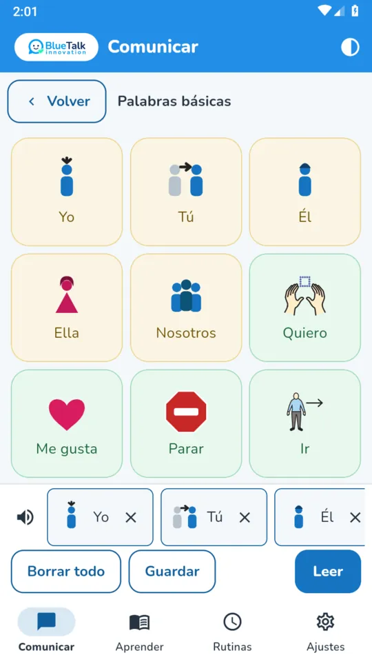

Pestaña Comunicar
Toca pictogramas y arma la frase
Hay ocho categorías: Palabras básicas, Emociones, Comida, Animales, Acciones, Familia y lugares, Objetos y Clima. Cada pictograma que tocas pasa a la barra de abajo y el botón «Leer» dice la frase en voz alta.
- Buscador. Escribe una palabra para encontrar su pictograma.
- Fijar en el inicio. Mantén presionado un pictograma y queda a mano en la pantalla principal.

